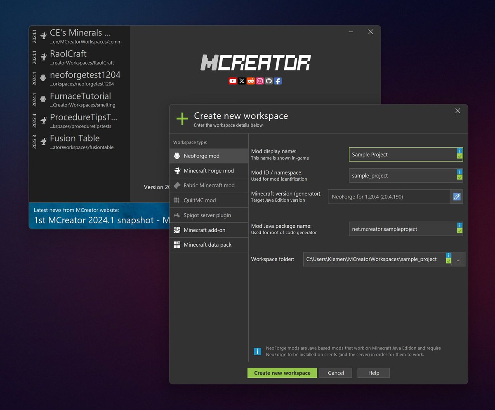

Modding & Création
Adapter, transformer et améliorer des univers de jeux par curiosité technique.
Modding sur Brotato
Sur Brotato, j'ai exploré la modification des mécaniques de jeu et l'ajout de nouveaux contenus. Ce projet m'a permis de comprendre comment structurer des scripts pour influencer l'équilibrage et le gameplay d'un jeu existant.
Personnalisation Minecraft
Minecraft a été mon premier terrain de jeu pour le modding. Par pure curiosité, j'ai appris à modifier des fichiers de configuration et à ajouter des fonctionnalités simples pour personnaliser l'expérience utilisateur et les interactions dans le monde.

Pourquoi le Modding ?
Le modding est pour moi une porte d'entrée fascinante vers la compréhension de ce que l'on ne voit pas. Démonter un jeu pour voir comment il fonctionne et le remonter avec mes propres idées est le meilleur moyen d'apprendre, selon moi, la logique de programmation.